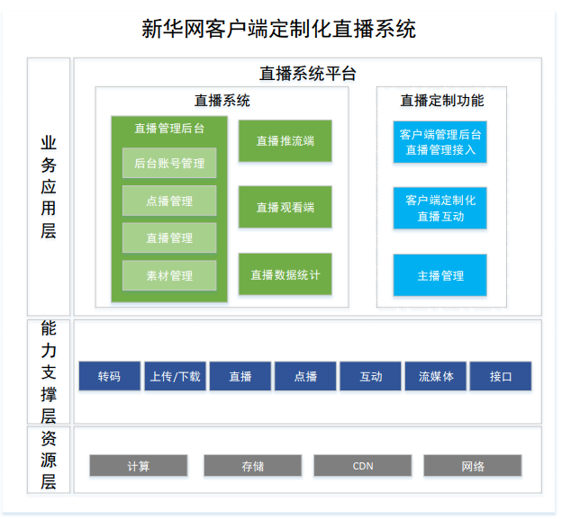

项目背景
随着新华网客户端业务的不断开展，内容展现方式成多样化发展。直播作为一种重要的媒介形态及内容呈现方式，随着其门槛的降低和交互方式的多元化被越来越多的人所接受。相比其他的信息传播载体，视频直播能够承载更多的信息量，在信息交流的深度上具有明显的优势。在4G网络普及、5G即将兴起的背景下，视频直播应用已经渗透到诸多垂直行业，在媒体资讯的应用也日趋普遍和成熟。新华网急需拓展直播业务，新华网客户端内容和呈现方式需优化升级，让新闻资讯、知识内容等信息传播更及时更高效。
解决方案
平台以标准云计算三层架构设计，充分的保障了平台开放、扩展、安全等架构优势，总体分为业务应用层、能力支撑层、资源层。
业务应用层直播系统平台为本次平台建设的核心内容，包括直播系统本身产品能力与直播定制开发内容两部分。
能力支撑层提供支撑平台业务应用的底层能力，包括转码、上传/下载、直播、点播、互动、流媒体、接口等能力。
资源层是平台部署所需资源，底层资源以计算、存储、CDN、网络为基础单元，支持 各种资源环境，如：私有云、专属云、公有云等。
